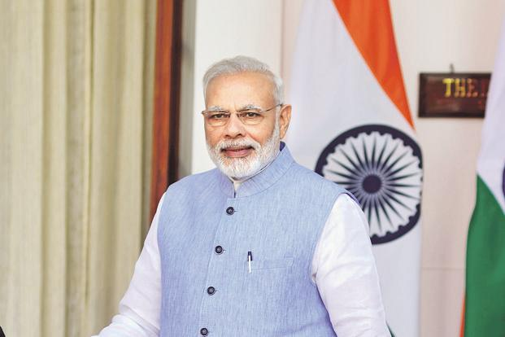

Modi rejects allegations over 15th Finance Commission

CHENNAI: Prime Minister Narendra Modi on Thursday rejected the allegations of southern states, including Tamil Nadu, that the Terms of Reference (ToR) of the 15th Finance Commission were biased against them and said it would benefit states that took population control measures.
"An issue that has been raised by certain vested interests over the last few days... Baseless allegations are being made about the ToR of the 15th Finance Commission being biased to the states of a particular region," he said after inaugurating a building of the Cancer Institute (WIA) here.
"Let me tell you our critics seem to have missed something. The Union government has suggested to the Finance Commission to consider incentivising states who have worked on population control. By this yardstick, states like Tamil Nadu, which has devoted a lot of efforts, energy and resources towards population control, would certainly benefit."
He said it was not the case earlier.
Southern states have been complaining about the ToR of the Finance Commission saying their interests would be harmed in the matters of resource allocation because of their better performance on population control and economic growth.
The issues was first raised by Karnataka Chief Minister Siddaramaiah, which was followed by BJP's ally-turned-foe Andhra Pradesh Chief Minister N. Chandrababu Naidu.
On Tuesday, Kerala Finance Minister Thomas Issaac convened a meeting of southern Finance Ministers which was attended by representatives from Karnataka, Andhra Pradesh and Puducherry, in which they called the ToR a "threat to federalism".
Modi said the Union government was committed to cooperative federalism.
"Our Mantra is 'Sabka Sath Sabka Vikas'. Let us all work together to build new India, which would make our freedom fighters proud," he said.
"An issue that has been raised by certain vested interests over the last few days... Baseless allegations are being made about the ToR of the 15th Finance Commission being biased to the states of a particular region," he said after inaugurating a building of the Cancer Institute (WIA) here.
"Let me tell you our critics seem to have missed something. The Union government has suggested to the Finance Commission to consider incentivising states who have worked on population control. By this yardstick, states like Tamil Nadu, which has devoted a lot of efforts, energy and resources towards population control, would certainly benefit."
He said it was not the case earlier.
Southern states have been complaining about the ToR of the Finance Commission saying their interests would be harmed in the matters of resource allocation because of their better performance on population control and economic growth.
The issues was first raised by Karnataka Chief Minister Siddaramaiah, which was followed by BJP's ally-turned-foe Andhra Pradesh Chief Minister N. Chandrababu Naidu.

Mehuli Ghosh won silver in the 10m women's air rifle event.
In the 105 category weightlifting for men, Pradeep Singh won the silver.
In 10m women's air pistol, Heena Sidhu won the silver and added second silver for India at the Gold Coast 2018 Commonwealth Games.
Weightlifter P. Gururaja opened India’s medal account on the first competition day, claiming a silver in the men’s 56kg category.
Tejaswini Sawant won a silver medal in 50m prone finals in shooting.
Wrestler Babita Kumari won silver in 53kg event.
Bronze (10)
In the women's discus throw, Navjeet Dhillon grabbed the bronze with her final throw of 57.43m
In women's freestyle 76kg wrestling event, Kiran bagged a bronze medal.
Delhi-born Ankur Mittal claimed the bronze in men's double trap shooting event.
Om Mitharval won bronze in the 50m men's pistol event and in the 10m men's air pistol event.
India's Apurvi Chandela won bronze in the 10m women's air rifle event.
One more medal for weightlifting, Vikas Thakur added a shade of bronze to Indian weightlifters’ golden run at the Commonwealth Games, claiming the third position in the 94kg category by equalling his personal best.
Ravi Kumar settles for bronze in men’s 10m air rifle event at 21st Commonwealth Games.
Teenager Deepak Lather from Haryana became the youngest Indian weightlifter to claim a Commonwealth Games medal, clinching a bronze in the men’s 69kg category.
Sachin Chaudhary did the country proud by bagging a bronze medal in the men’s heavyweight category in para powerlifting of the XXI Commonwealth Games.
In women's freestyle 76kg wrestling event, Kiran bagged a bronze medal.
Delhi-born Ankur Mittal claimed the bronze in men's double trap shooting event.
Om Mitharval won bronze in the 50m men's pistol event and in the 10m men's air pistol event.
India's Apurvi Chandela won bronze in the 10m women's air rifle event.
One more medal for weightlifting, Vikas Thakur added a shade of bronze to Indian weightlifters’ golden run at the Commonwealth Games, claiming the third position in the 94kg category by equalling his personal best.
CHENNAI: Prime Minister Narendra Modi on Thursday rejected the allegations of southern states, including Tamil Nadu, that the Terms of Reference (ToR) of the 15th Finance Commission were biased against them and said it would benefit states that took population control measures.
"An issue that has been raised by certain vested interests over the last few days... Baseless allegations are being made about the ToR of the 15th Finance Commission being biased to the states of a particular region," he said after inaugurating a building of the Cancer Institute (WIA) here.
"Let me tell you our critics seem to have missed something. The Union government has suggested to the Finance Commission to consider incentivising states who have worked on population control. By this yardstick, states like Tamil Nadu, which has devoted a lot of efforts, energy and resources towards population control, would certainly benefit."
He said it was not the case earlier.
Southern states have been complaining about the ToR of the Finance Commission saying their interests would be harmed in the matters of resource allocation because of their better performance on population control and economic growth.
The issues was first raised by Karnataka Chief Minister Siddaramaiah, which was followed by BJP's ally-turned-foe Andhra Pradesh Chief Minister N. Chandrababu Naidu.
On Tuesday, Kerala Finance Minister Thomas Issaac convened a meeting of southern Finance Ministers which was attended by representatives from Karnataka, Andhra Pradesh and Puducherry, in which they called the ToR a "threat to federalism".
Modi said the Union government was committed to cooperative federalism.
"Our Mantra is 'Sabka Sath Sabka Vikas'. Let us all work together to build new India, which would make our freedom fighters proud," he said.
"An issue that has been raised by certain vested interests over the last few days... Baseless allegations are being made about the ToR of the 15th Finance Commission being biased to the states of a particular region," he said after inaugurating a building of the Cancer Institute (WIA) here.
"Let me tell you our critics seem to have missed something. The Union government has suggested to the Finance Commission to consider incentivising states who have worked on population control. By this yardstick, states like Tamil Nadu, which has devoted a lot of efforts, energy and resources towards population control, would certainly benefit."
He said it was not the case earlier.
Southern states have been complaining about the ToR of the Finance Commission saying their interests would be harmed in the matters of resource allocation because of their better performance on population control and economic growth.
The issues was first raised by Karnataka Chief Minister Siddaramaiah, which was followed by BJP's ally-turned-foe Andhra Pradesh Chief Minister N. Chandrababu Naidu.
Ads
We can add 'ads' over here..
putting the ads in the side bar gives max
chance of clicking on ad.
 India launches another navigation satellite as part of home grown GPS
India launches another navigation satellite as part of home grown GPS Mumbai: City can become smart only when roads are pothole-free, says HC
Mumbai: City can become smart only when roads are pothole-free, says HC